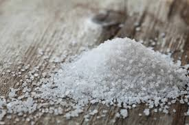

2 cups all-purpose flour

1 tsp salt
2 tsp sugar

3/4 cup warm water
Brought to you from the streets of Shanghai to your kitchen is the Shangai Da Bing or Sesame Pancake. This pancake has a savory filling and is topped with sesame seeds to give it that extra boost of flavor.
2 cups all-purpose flour
1 tsp salt
2 tsp sugar
3/4 cup warm water

4 tablespoons melted butter
½ cup all-purpose flour
1 teaspoon salt
1/4 teaspoon Sichuan peppercorn powder

1/4 teaspoon ground white pepper

3 scallions, very finely chopped